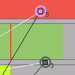
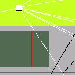

Slicer. version beta 0.2.5
View screenshot | View demo video | Documentation
|
||||||||

Description
Slicer allows you to create rhythms and textures from any sound you import by moving the Slicer nodes. Slicer will chop your sound into slices and superpose them. The slices will be created and manipulated acording to the position of the control nodes (the ones represented by a square). The slicer nodes (in color) control volume (vertical) and pan(horizontal) of each slice, while the control nodes control pitch, lenght, shift and starting point for all the slices.
Slicer has been constructed using Mirra, a Python 2D OpenGL graphics library developed by ixi. It can be downloaded from http://github.com/enrike/mirra. Find more detailed info about Mirra on download/mirra/documentation.html
Slicer is free sofware with GPL license
Latest source code available at http://github.com/enrike/slicer
Old version of Slicer can be found here